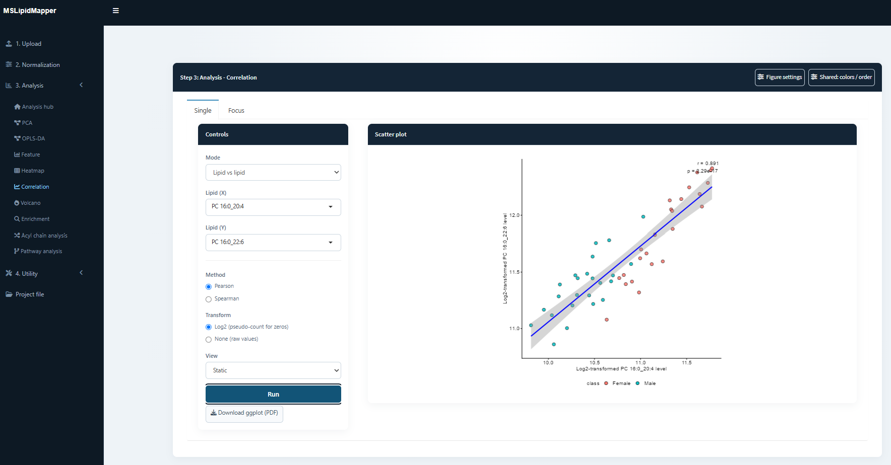

Correlation
Inspect associations between lipid abundances across samples.
Compare two lipids
Open 3. Analysis → Correlation and select the Single tab.
- Set Mode to Lipid vs lipid.
- Select PC 16:0_20:4 under Lipid (X) and PC 16:0_22:6 under Lipid (Y) for this example.
- Select Pearson or Spearman under Method. The screenshot uses Pearson.
- Under Transform, select Log2 (pseudo-count for zeros) as shown, or None (raw values) to analyze the input values directly.
- Set View to Static and click Run.


Read the scatter plot
Each point represents a sample. The axes show the selected lipids after the chosen transformation, and colors identify the sample groups. The plot reports the correlation coefficient and p-value. In this screenshot, r = 0.891, indicating a positive association across the plotted samples.
The example includes both Female and Male samples. Consider group structure when interpreting the overall correlation, since differences between groups can contribute to the association.
Pearson measures linear association, while Spearman measures rank-based association. Choose the method and transformation to match your analysis.
Customize and export
Use Figure settings to adjust appearance and Shared: colors / order to configure group colors. Click Download ggplot (PDF) to save the static plot.